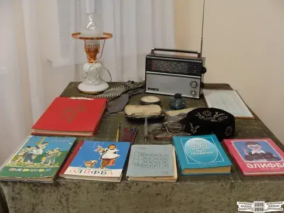

Арча педагогия көллиятендә 1999 елдан «Әлифба» музее эшли. Музей бай
тарихи фондка ия. Биредә борынгы заманнардан алып бүгенге көнгә кадәр
дөнья халыкларында уку-язуның килеп чыгышын чагылдырган 1226 экспонат
урын алган. Музейның барлыкка килүенә Арча педколледжы укытучылары
Вагыйзов Сәләй Гататович һәм Валитова Рамзия Гиляҗевнаның педогогик
һәм фәнни эзләнүләре сәбәпче була. Алар 1965 елда татар мәктәпләре
өчен бастырылган «Әлифба» китабының авторлары. Шулай ук музейда алар
тарафыннан язылган 43 китап урын алган. Музей район һәм
республикабызның мәдәни тормышында зур урын алып тора.
ӘЛИФБА ТУРЫНДА ФАКТЛАР
1) Беренче славян әлифбасы Львов шәһәрендә Рус беренче басмачысы
Иван Федоров тарафыннан басылып чыгарыла. Бу әсәрнең 15 юллы 40
биттән торган бердәнбер экземпляры Гарвард университетында саклана.
(Кайбер сәбәпләр аркасында Федоров әлифбасы Россиядә бик популяр
булмаган.)
2) Күп гасырлар дәвамында татар гаиләләрендә Коръән төп дәреслек
булып саналган.
3) Беренче татар әлифбасы 1778 елда Сәгыйт Хәлфин тарафыннан
төзелгән. Нәкъ шушы елларда 1 нче Казан ирләр гимназиясендә татар
телен өйрәнүче сыйныфлар ачыла. Хальфин әлифбасы Мәскәү университеты
типографиясендә басылып чыга һәм берничә дистә ел дәвамында татар
телендә язу һәм уку буенча бердәнбер кулланма булып кала.
4) XX гасыр башы татар халкының рухи тормышы күтәрелү чоры дип
санала. Шул вакытта укытучылар әзерләү курслары ачыла башлый. Монда
ир-атлар да, хатын-кызлар да белем алган. Яңа дәреслекләр чыгаруга
күп игътибар бирелә. Татар әлифбасында рус әлифбасыннан рәсемнәр
барлыкка килә башлый. Дөрес, Татар әлифбаларында сурәтләр урынсыз
дигән кызу бәхәсләр дәвам итте. Ләкин авторлар барыбер текстларны
рәсемнәр белән озата барганнар.
5) 1919 елның 26 декабрендә илнең 8 яшьтән 50 яшькә кадәрге барлык
халкы үз теләге буенча туган яки рус телендә грамотага өйрәнергә
тиеш булганлыгы турында декрет чыгарыла.
6) 1928 елда гарәп графикасы урынына латин графикасы кертелә. Ул
яңалиф дип аталган. Яңалифта 33 хәреф исәпләнә. Бу 1938 елга кадәр
дәвам итә, кириллицада Әлифба барлыкка килгәнче.
7) Мөхетдин Курбангалиев тарихка өч Әлифба авторы буларак керә, алар
балаларны гарәп, латин графикасына, ә аннары кириллицага өйрәтә.